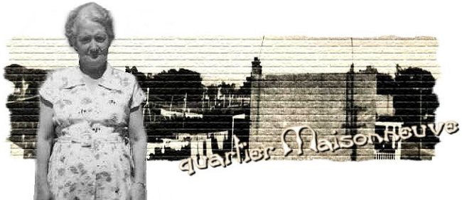
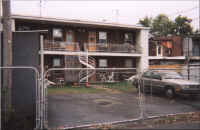
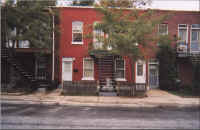
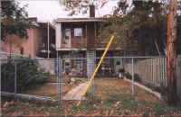
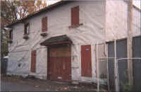
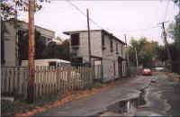
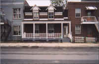
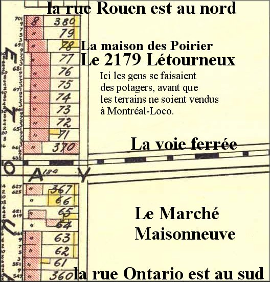

|

Maisonneuve
est d'abord une ville privée, fondée en 1883 par un groupe
de promoteurs qui veulent en faire une ville ouvrière
canadienne-française en attirant des industries sur leur
territoire. Ils connaissent un vif succès, mais ils
s'endettent trop en voulant embellir leur ville et cette dernière est
annexée à la Ville de Montréal en 1910. Charles et
Ézilda s'installent en 1925 au 2179
Létourneux, dans un modeste trois pièces. Ézilda y vit
jusqu'à son décès en 1964. Ce sont en fait des logements
en série de deux étages, en retrait du trottoir (détail
indiquant la modernité de ces logements, en comparaison avec les
vieux logements des autres quartiers qui sont accolés au
trottoir). À l'arrière il y a des hangars-écuries, et, de
l'autre côté de la ruelle, les gens se font de grands potagers
dans les terrains vacants pendant de nombreuses années.
Grâce à
Francine qui est allée explorer le coin avec sa caméra à
l'été 2001, nous avons des images de ce qu'est devenu le 2179
Létourneux.

|
SURPRISE:
là où il y avait huit logements, il n'y en a plus que quatre!
(
n'oubliez pas de cliquer sur les photos pour mieux les
voir) |
|

|
Charles et Ézilda
habitaient au deuxième étage, côté gauche. Ce
logement comprend maintenant aussi le logement de la
voisine, Mlle Beaupré, une célibataire qui s'est mariée
sur le tard pour devenir Mme Savaria. |
|
|
|

|
Voici le même
édifice, vue de l'arrière.
La galerie sur
laquelle la famille Consigny a pris tant de photos, y
recherchant un meilleur éclairage qu'à l'intérieur, est
maintenant plus grande. Il y a toujours un petit
espace de rangement à l'extrémité. |
|
|
|

|
Plus au sud du
2179, Francine a découvert des logements identiques à
ceux qu'ont connu les Consigny, l'arbre en
moins. Les fenêtres et portes ont été changées,
et probablement la brique refaite. Les
"jalousies" (persiennes) ont disparues.
Espérons pour les locataires actuels qu'on leur a
installé l'eau chaude et une chambre de bain, mais où,
ces logements sont si petits. |
|
|
|

|
Une autre photo
montrant des logements de la même dimension qu'ont connu
les Consigny. |
|
|
|

|
Voici maintenant
une vue arrière de ces vieux logements. Les vieux
hangars ont été démolis dans ce cas-ci. |
|
|
|

|
Mais ici ces vieux
hangars sont encore debout, au tout début on les
utilisait comme écuries. |
|
|
|

|
Vue de la ruelle
du côté est de la rue Létourneux, au nord de la voie
ferrée. Il ne reste qu'un bloc d'hangars.
Le
2179 est à la hauteur de la voiture rouge.
|
|
|
|

|
Revenons à
l'avant, au nord de l'ancien logement des Consigny, se
trouve encore la "maison des Poirier". Une
petite maison unifamiliale de la famille Poirier, dont une des filles de la maison, Yvonne, est une amie
d'enfance de Jacqueline.
|
|
|
|
 |
|

|
|